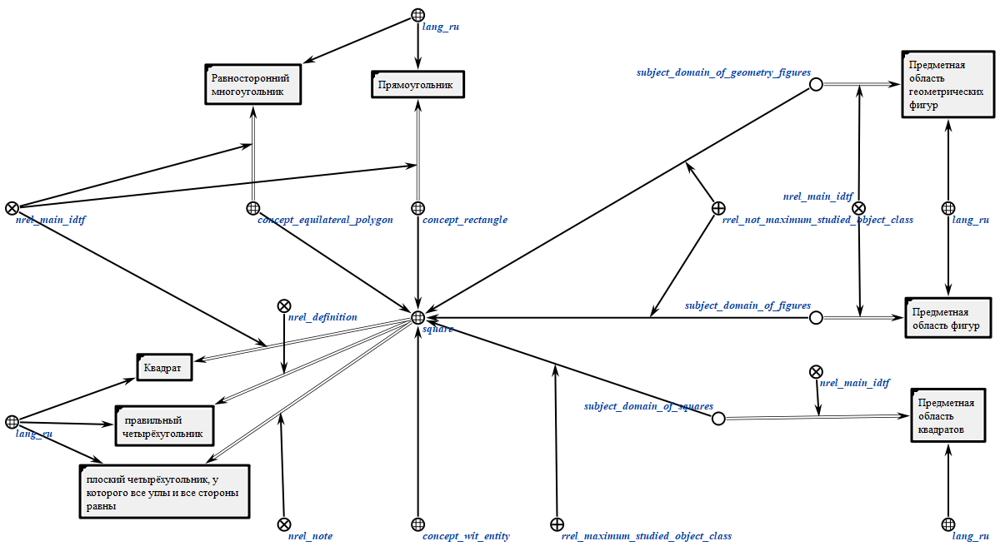
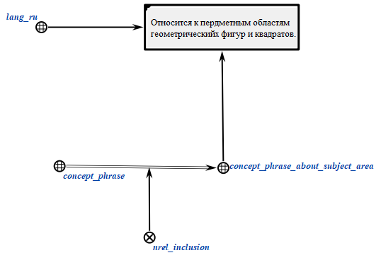
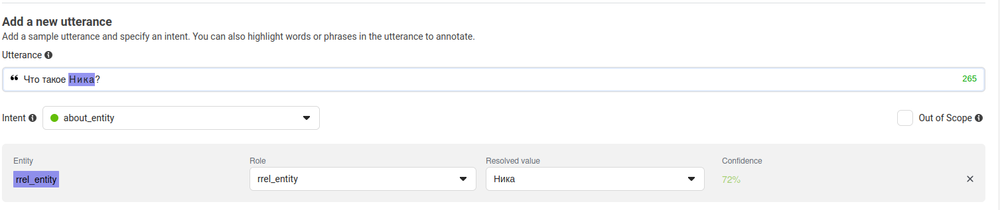
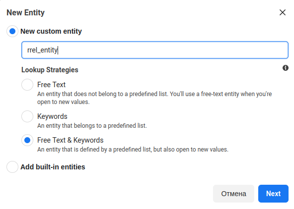
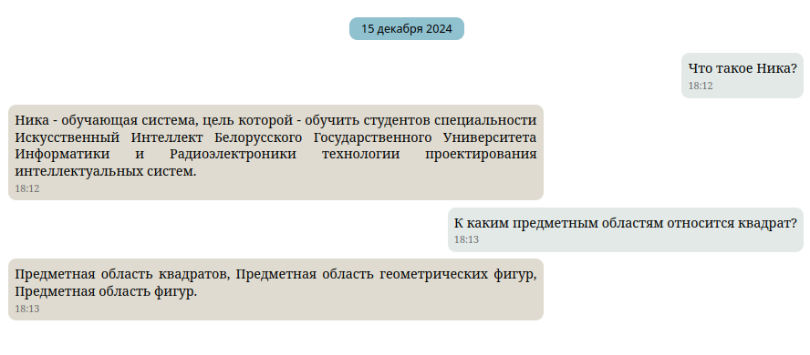

Guide for Creating New Questions
This section describes the algorithm for creating new questions for the Nika system.
Knowledge Formalization
Entity Formalization
To enable the system to answer questions about a specific entity, this entity must be formalized in the knowledge base in a specific way.
An example of such an entity is shown in the image:

A key feature of such formalization is concept_wit_ai.
Belonging to this class serves as an indicator for the classification process using the Wit.ai service.
Logical Structures Formalization
Using statements, it is possible to derive new knowledge (new formulas) based on existing knowledge using logical inference mechanisms. For example, the general reasoning schema, the Modus Ponens rule, can be formally stated as follows: if there is knowledge A, and also knowledge that A implies B (A leads to B, A derives B), then knowledge B is also true.
Thus, NIKA generates answers to user questions by deriving new knowledge from the knowledge existing in the knowledge base. For this, rules for deriving answers to user messages are initially defined in the knowledge base. An example of such a structure is shown in the image.

It is also necessary to consider the case where the entity a question is about does not exist in the knowledge base. To handle such situations, an additional logical rule must be created. An example of such a rule is shown below:

To create your own questions in these logical structures, you just need to change the message class name, phrases, and the answer logical rule node to your own.
Response Template Formalization
Each logical rule must have a response template (nrel_answer_pattern). This is a set that includes the class of phrases used to respond to a message based on this rule.
Response templates are required to generate response text for the user. They are of two types:
- Static template;
- Template with variables.
An example of a static template is shown in the image. It consists of simple text that is output for the relevant user query.

A template with variables requires a variable template description that the system uses to find the necessary concepts in the knowledge base. The template is shown in the image.

On the right side of the image is the variable template that the system uses to locate necessary constructs in the knowledge base. On the left side is the template text with a regular expression. In this case, the answer will consist only of the result of processing the regular expression.
In a variable template, you can describe various structures using node variables. The size of such a structure depends on the creator's imagination and can have the following appearance:

In the variable template, you may notice a structure like $_{_}. This notation is a special regular expression processed by the system.
Inside the curly braces, specify the required variable name, and between $ and {, specify the handler name for the chosen variable.
Currently, the following handlers are supported:
${example}- outputs the content of theexamplesc-link;$...{example}- outputs the names of the decomposition elements of theexampleentity;$set_power{example}- outputs the power of the setexample;$superclass_find{example}- outputs the names of all superclasses of theexampleentity;$subarea_find{example}- outputs the names of all subject areas to which theexampleentity belongs.
For cases where the question is about an entity not present in the knowledge base, a phrase template for the question about an unrecognized entity must be described. Such a template is shown below.

Message Class Formalization
One of the most crucial steps is formalizing the class of the created message. As a result of the previous steps, the created class should appear as follows:

Classification
Currently, the system classifies messages using:
- Alternative Classification
- Wit.ai Service
Alternative Classification
For alternative classification, an additional logical rule is required. This rule works on the principle: if the request text matches the specified one, then this message belongs to the specified class with the specified entities. An example of such classification is shown in the image.

In general, this approach is sufficient for the correct operation of the system. However, the system will only be able to respond to messages whose text you explicitly specify, which is not convenient. To solve this issue, the system can interact with the Wit.ai service.
Wit.ai
Wit.ai is an open-source classifier with a user-friendly interface for training your system.
To start using this service, visit the Wit.ai website and register.
After that, create a new application and set the following settings:

Description of working with the application:
- Understanding Section: Here, you train your application to classify messages and identify entities. Enter the messages you want the system to learn in the input field and then manually highlight the question class and entities. After a few such operations, the service will start correctly classifying messages on its own.

-
Management Section: Here, you work with message classes and entities, view already defined questions, and configure your application.
- Intents Subsection: Here, you create the message classes you need.

- Entities Subsection: Here, you need to create one entity, namely
rrel_entity, and then highlight this specific type of entity.

-
Utterances Subsection: Here, you can review the predefined questions and make corrections if necessary.
-
Settings Subsection: Application settings. An important aspect here is the
Server Access Token. After sufficiently training your application (this can be tracked by the color of the circle in the upper left corner), copy the token and paste it into thenika.inifile as the server token.

The only drawback of using the Wit.ai service is the requirement for internet access.
Conclusion
After completing all the steps, you can build the knowledge base and run the system. If all the steps are performed correctly, the system will respond to your messages.

If you encounter unclear errors or wish to examine the agent's workflow, you can check the logs in the console window where the start.sh script is running.